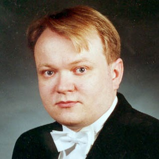
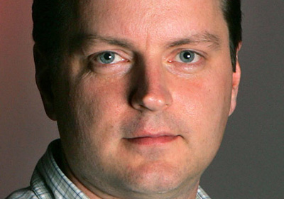
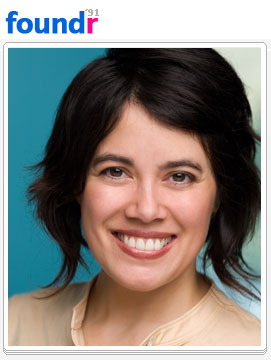
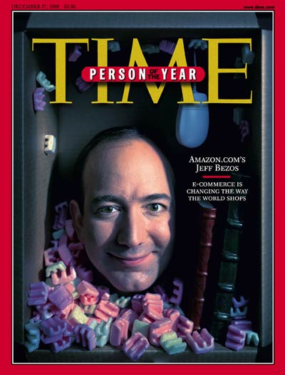
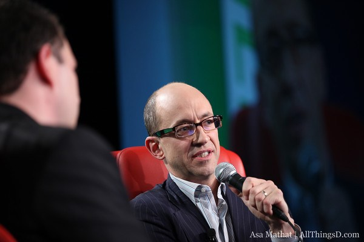

Internetul este o reţea globală de calculatoare interconectate care permite schimburi de date între acestea, fiecare computer fiind identificat printr-o adresă unică IP (Internet Protocol).
În funcţie de numărul de calculatoarelor interconectate, reţelele se împart în:
LAN - Local Area Network: reţea de mici dimensiuni aflată de obicei într-o singură încăpere sau instituţie;
MAN - Metropolitan Area Network: reţea la nivelul unui oraş;
WAN - Wide Area Network: reţea de mari dimensiuni cu calculatoare repartizate la nivelul unei ţări sau continent;
GAN - Global Area Network: reţea globală, răspândită la nivelul întregii planete. Un exemplu de astfel de reţea este Internetul.
Cum ne conectăm la Internet?
Un furnizor de servicii de Internet (ISP, Internet Service Provider) este compania ce permite accesul la Internet și la alte servicii web. În funcţie de modul de modul de conectare (dial-up, cablu, fibră optica sau Wi-Fi) viteza de conectare și distanţa la care conexiunea este posibilă pot diferi.
Clienţi şi servere
Serverul este o aplicaţie software care oferă anumite servicii oricui le cere. Deseori, calculatorul pe care aceasta aplicaţie (sau mai multe) rulează este numit și el server. Uzual, acesta este mai puternic și beneficiază de caracteristici suplimentare (numeroase hard-diskuri pentru stocarea datelor, răcire a sistemului mai puternică etc.).
Cel care solicită serviciile serverului este clientul. Utilizatorul care dorește să folosească serviciile serverului va folosi un client pentru a trimite cereri către acesta, serverul putând răspunde mai multor cereri deodată.
Ce este o adresă URL, o adresă IP și un DNS?
Fiecare site web este codificat în limbajul HTML (HyperText Markup Language), care poate fi modificat cu alte limbaje (spre exemplu CSS, Creative Style Sheet), descifrat de browserul web. Pentru a accesa o pagină web, browserul are nevoie de adresa acestuia: adresa URL (Uniform Resourse Locator).
La rândul ei, adresa URL are o adresă IP (Internet Protocol) care indică computerului sau dispozitivului conectat la Internet unde să caute informaţiile cerute. Aceasta stabilește cum sunt identificate calculatoarele conectate la Internet și care este ruta optimă pe care trebuie să o parcurgă un pachet de date de la sursă la destinaţie. Iniţial, adresele IP erau numere memorate în memoria calculatorului pe 32 de biţi (Ipv4). Astfel, erau posibile aproximativ 4 miliarde de combinaţii (2^32). Recent, a fost introdus Ipv6, numere pe 128 de biţi ca urmare a Internetului aflat într-o continuă dezvoltare și a necesităţii mai multor adrese IP.
DNS (Domain Name System) este un protocol ce asociază nume (adresele URL) adreselor IP. Practic, este „cartea de telefoane a Internetului”: este mai ușor de reţinut "www.google.com" decât adresa IP al acestui website. Dacă o aplicaţie software știe numele unui dispozitiv din reţea, aceasta poate afla adresa IP a dispozitivului și va putea să trimită date adresei respective folosind TCP sau UDP.
TCP (Transfer Control Protocol) este un protocol de comunicaţie care oferă transmiterea sigură a datelor între calculatoare. Pentru ca transmiterea să se realizeze, datele sunt împărţite în „pachete” și reasamblate la destinaţie. În cazul unui pachet pierdut pe drum, TCP retransmite acel pachet și se asigură ca nu există erori. UDP (User Datagram Protocol) este un protocol asemănător cu TCP, dar prezintă următoarele diferenţe:
TCP
UDP
Fiabil: TCP gestionează confirmări de mesaje, retransmisii şi timeout-uri. În cazul în care nu mai este posibilă livrarea unui mesaj va fi resetată întreaga conexiune.
Nefiabil: la trimiterea unui mesaj nu se oferă nici o garanţie în ceea ce priveşte livrarea acestuia cu succes. Nu există conceptele de confirmări de mesaje, retransmisii şi timeout-uri.
Ordonat: dacă două mesaje sunt trimise pe o conexiune într-o anumită ordine atunci aplicaţia de la celălalt capăt le va primi în aceiaşi ordine. În cazul în care mesajele ajung în altă ordine, TCP aplică mesanisme de resecvenţiere.
Neordonat: dacă două mesaje sunt trimise către acelaşi destinatar, nu există nici o garanţie privind ordinea în care sunt recepţionate şi nici mecanisme de resecvenţiere în cazul în care sosesc în altă ordine.
Încărcare mare: există o încărcare mare cu informaţii de control – sunt necesare trei mesaje iniţiale numai pentru stabilirea conexiunii; sunt de asemenea implementaţi algoritmi de control ai fluxului şi congestiei.
Încărcare mică: nu există nicio încărcare cu informaţii de control – nici un fel de gestiune a secvenţierii, nici un fel de informaţie de control al conexiunii.
Flux de date: datele sunt văzute ca un flux continuu, fără a exista informaţii implicite cu privire la locul unde începe sau se sfârşeşte un pachet. Pachetele pot fi fragmentate în bucăţi mai mari sau mai mici în mod arbitrar.
Datagrame: pachetele sunt trimise ca entităţi individuale şi se garantează că vor fi livrate nefragmentat. Pachetele au graniţe bine determinate şi nu există posibilitatea de a fi fragmentate şi recombinate în fluxuri de date.
Câţi oameni folosesc Internetul?
Deși în 1981 existau aproximativ 2308 utilizatori ai reţelei ARPANET și ale altor reţele, Internetul s-a răspândit atât de rapid încât a atins un număr de peste un million de utilizatori în doar 7 ani, în 1989.
Conform unui studiu realizat în 2012, numărul oamenilor conectaţi la Internet a depășit 2,4 miliarde.
Harta globală a utilizării medii IPv4 monitorizată timp de 24 de ore în iunie-octombrie 2012 (roșu-intens; galben, verde-mediu; albastru deschis, albastru închis-scăzut):
Vint Cerf
Bob Kahn
Tim Berners Lee
Raymond Samuel Tomlinson
Michael Hart
Gary Thuerk
Marc Andreessen
Jarkko Oikarinen
Robert Tappan Morris
David Bohnett
Warg Cunningham
Sabeer Bhatia
Matt Drudge
Scott Fahlman
David Filo
Jerry yang
Jimmy Wales
Niklas Zennström
Chad Hurley
Steve Chen
Mark Zuckerberg
Sergey Mikhaylovich Brin
Larry Page
Caterina Fake
Daniel Stewart Butterfield
Peter Andreas Thiel
Pierre Omidyar
Steve Paul Jobs
Christopher Poole
Craig Newmark
Jawed Karim
Jeff Bezos
Joshua Schachter
Julian Assange
Dick Costolo
Bram Cohen
Reid Hoffman
Shawn Fanning
Cuprins
Vint Cerf
Vint Cerf: Părinte al Internetului
Data şi locul naşterii: 23 iunie 1943, New Haven, Connecticut, SUA
Educaţie:
A terminat liceul Van Nuys, împreună cu Jon Postel şi Steve Crocker.
A studiat la Universitatea Stanford, unde şi-a obţinut licenţa știinţifică în matematică, după care s-a angajat la IBM.
A urmat Universitatea din California, Los Angeles, unde şi-a obţinut masteratul în 1970 şi doctoratul, în 1972.
A fost profesor asistent la Universitatea Stanford până în 1976, unde a condus cercetări asupra protocoalelor de informaţii interconectate. În această perioadă îl întâlnește pe Bob Kahn, care lucra la arhitectura hardware pentru ARPAnet.
Activitate:
Efectuează cercetări împreună cu Bob Kahn asupra protocoalelor de reţele interconectate și proiectează suita de protocoale TCP (Transmission Control Protocol) și IP (Internet Protocol), astfel punând bazele Internetului.
A fost vice-preşedinte al organizaţiei „Servicii de Informaţie Digitală MCI” şi astfel a coordonat construirea „MCI Mail”, primul serviciu comercial de e-mail care avea să fie conectat la Internet.
Din octombrie 2005, Vint Cerf a lucat ca vice-preşedinte în cadrul companiei Google, devenind cunoscut pentru predicţiile lui în ceea ce priveşte evoluţia tehnologiei şi cum va afecta ea societatea.
În 1992, Vint Cerf şi Bob Kahn au inaugurat „Societatea Internetului” pentru a furniza suport educaţiei şi activităţilor legate de Internet.
Premii:
„Medalia Naţională Americană pentru Tehnologie”;
„Medalia Alexander Graham Bell”;
„Premiul Turing”.
Cuprins
Bob Kahn
Bob Kahn: Părinte al Internetului
Data şi locul naşterii: 23 decembrie 1938, Brooklyn, New York
Educaţie:
A absolvit Facultatea din New York şi a obţinut licenţa în Inginerie Electrică;
A urmat studiile Universităţii Princeton, unde a obţinut masteratul în 1962 şi doctoratul în 1964.
Activitate:
Împreună cu Vint Cerf a efectuat cercetări asupra protocoalelor de reţele interconectate şi a proiectat suita de procotoale TCP (Transmission Control Protocol) şi IP (Internet Protocol), astfel punând bazele Internetului.
Bob Kahn a venit cu ideea iniţială pentru TCP care avea scopul de a înlocui un protocol mai vechi, NCP, folosit în ARPANET. În 1992, Vint Cerf şi Bob Kahn au inaugurat „Societatea Internetului” pentru a furniza suport educaţiei şi activităţilor legate de Internet, iar un an mai târziu au construit prima variantă de TCP.
A lucrat la AT&T şi mai târziu a devenit profesor asistent la MIT. A lucrat de asemenea la BBN, unde a ajutat la dezvoltarea IMP-ului (Interface Message Processor). În 1972 a demonstrat funcţionalitatea ARPANET conectând 20 de calculatoare, urmând să înceapă cea mai semnificativă cercetare asupra calculatoarelor şi dezvoltarea programelor susţinută vreodată de guverul SUA.
Premii:
„Premiul Turing”;
„Medalia Naţională de Tehnologie”;
„Premiul SIGCOMM”;
„Premiul Charles Stark Draper”;
„Premiul Japonez”.
Cuprins
Tim Berners Lee
Tim Berners-Lee: Inventatorul World Wide Web
Data şi locul naşterii: 8 iunie 1955, Londra, Marea Britanie
Educaţie:
Primii ani de şcoală i-a urmat la Şcoala Primară Sheen Mount şi South London Emanuel’s School.
A urmat Queen’s College la Oxford, unde a primit diploma pentru cel mai bun elev la fizică.
Activitate:
În timp ce lucra la CERN, Tim Berners–Lee a inventat „World Wide Web” în anul 1989, iar în 1990 a implementat prima comunicaţie dintre un client HTTP şi un server prin intermediul Internetului.
Conceptul de hypertext a fost propus de Tim Berners–Lee şi avea scopul de a împărţi informaţii între cercetători. Astfel, el a construit un prototip numit ENQUIRE în anul 1980.
CERN era deja cel mai mare în 1989, iar Berners–Lee s-a decis să combine ideile de hypertext, TCP şi domeniu, luând astfel naştere World Wide Web în 1990 cu ajutorul lui Robert Cailliau.
Berners–Lee a înfiinţat la MIT W3C în anul 1994, principala organizaţie internaţională care stabileşte normele şi standardele după care funcţionează browserele web.
În prezent, lucrează împreună cu Guvernul Marii Britanii pentru a ajuta să facă informaţiile mai accesibile pe web şi este preşedinte la „Open Data Institute”.
Premii:
În 1994 a devenit unul dintre cei 6 membri ai „World Wide Web Hall of Fame”;
În 1995 a câştigat premiul „Young Innovator of teh Year” şi „Software System Award” oferit de ACM;
În 2004, a fost numit cavaler de regina Elisabeta a II-a etc.
Cuprins
Raymond Samuel Tomlinson
Raymond Samuel Tomlinson: Inventatorul e-mailului
Data şi locul naşterii: 8 iunie 1955, Londra, Marea Britanie
Educaţie:
A urmat Broadalbin Central School.
În cadrul Institutului Rensselaer Polytechnic, a participat în programul de co-operare cu IBM şi a obţinut licenţa în inginerie electrică în anul 1963.
La Institutul Tehnologiei Massachusetts(MIT) a obţinut în anul 1965 masteratul în ingineria electrică.
Activitate:
Ray Tomlinson este cunoscut pentru implementarea primului sistem de e-mail în anul 1971 pe ARPANET. Sistemul era construit pentru a comunica informaţii între useri conectaţi la ARPANET, userul fiind separat de calculator prin semnul „@” care a continuat să fie folosit până în ziua de astăzi.
Primul e-mail trimis de Ray Tomlinson a fost un test, asemanator cu „QWERTYUIOP”. La început, e-mailul nu a fost luat în considerare prea mult, iar Jerry Burchfiel i-a zis lui Ray „Nu spune nimănui! Asta nu e ce ar trebui să lucrăm.”
Premii:
În anul 2000 a primit premiul „George R. Stibitz”;
În anul 2001 a obţinut premiul „Webby” şi a fost inclus în „Rensselaer Alumni Hall of Fame”.
Cuprins
Michael Hart
Michael Hart: Creatorul e-bookului
Data şi locul naşterii: 8 martie 1947, Tacoma, Washington, SUA
Data şi locul decesului: 6 septembrie 2011, Urbana, Illinois, SUA
Educaţie:
A urmat cursurile Universităţii din Illinois, pe care le-a absolvit în doar 2 ani.
Activitate:
Michael Hart este cunoscut pentru inventarea cărţilor electronice (e-book sau e-reader) şi ca fondator al proiectului „Gutenberg”, primul proiect menit să facă cărţile electronice gratuite pe Internet.
Începutul proiectului „Gutenberg” a avut loc atunci când Michael Hart a vrut să trimită textul dintr-o copie după „Declaraţia de independenţă a SUA” mai multor oameni, dar i s-a spus că este inacceptabil să facă asta. Pentru a evita suprasolicitarea sistemului, a făcut textul accesibil pentru descărcare.
Astfel, a continuat scrierea textelor în acest mod (exemplu Biblia, Mark Twain, Shakespeare etc.) iar în anul 1987 avea deja scrise 313 cărţi. A continuat prin a recruta voluntari pentru proiect.
A fost de asemenea, autor, iar lucrările lui sunt disponibile gratuit pe serverele proiectului „Gutenberg”. În jurul anului 1993, a fost implicat în dezvoltarea unei enciclopedii a Internetului gratuită, numită „Interpedia”.
Cuprins
Gary Thuerk
Gary Thuerk: Părintele e-spamului
Data şi locul naşterii: necunoscute.
Educaţie:
A urmat între anii 1961 şi 1965 Universitatea Marquette din Milwaukee, Wisconsin.
Activitate
Gary Thuerk este cunoscut pentru primul spam de e-mail realizat pe data de 1 mai, 1978 trimis către 400 de oameni prin intermediul ARPANET, cu intenţia de a face marketing. Rezultatul a fost eficient, întrucât a rezultat în vânzări de peste 10 milioane de dolari în următorii câţiva ani. Iniţial, acest tip de e-mail se numea „e-mail nesolicitat”, iar „Defensive Communications Agency” l-a avertizat să nu mai facă asta din nou.
Gary Thuerk susţine că era conştient de schimbarea radicală ce avea să aibă loc în business datorită calculatoarelor, încă de când scria programe în Fortran pentru IBM.
A primit câteva plângeri, printre care a unui bărbat care i-a spus că nu-şi putea folosi calculatorul deoarece spam-ul a ocupat toată memoria companiei.
Potrivit unui studiu din iunie 2007, in jur de 90% din e-mailurile trimise în ziua de azi sunt spam. Totuşi, Gary Thuerk se consideră „Părintele e-marketingului”.
Cuprins
Marc Andreessen
Marc Andreessen: Părinte al primului browser web pe scară largă
Data şi locul naşterii: 9 iulie, 1971, Cedar Falls, Iowa
Educaţie:
A urmat Universitatea din Illinois, unde în decembrie 1993, a obţinut masteratul în ştiinţa calculatoarelor.
Activitate:
A lucrat pentru IBM şi „National Center for Supercomputing Applications” la universitatea din Illinois unde s-a familiarizat cu standardele World Wide Web.
Împreună cu Eric Bina, a lucrat la un browser grafic pentru public care avea să funcţioneze pe o gamă largă de computere. Codul rezultat a fost „Mosaic Web Browser”, primul browser web grafic.
După ce a absolvit universitatea din Illinois, Andreessen a fost sfătuit de Jim Clarck să înfiinţeze o companie de software pentru Internet. Astfel a luat naştere „Mosaic Communications Corporation”, care mai târziu şi-a schimbat numele în „Netscape Communications”. Netscape şi-a deschis porţile către public în 1995, fapt care l-a făcut popular pe Andreessen, apărând pe coperta revistei „Time” şi în numeroase ziare. Mai târziu, în 1990, succesul lui Marc Andreessen l-a inclus în topul celor 100 de inovatori sub 35 de ani.
Succesul companiei Netscape a atras atenţia Microsoft-ului, iar ca urmare Microsoft a cumpărat codul sursă al browser-ului Mosaic şi l-a transformat în „Internet Explorer”. Bătălia dintre cele două browsere este cunoscută ca „Browser Wars”.
În anul 2012, Marc Andreessen a fost menţionat în topul „100 cei mai influenţabili oameni din lume” al revistei Time, iar un an mai târziu a primit unul dintre cele 5 premii „Queen Elizabeth Prize for Engineering”.
Cuprins

Jarkko Oikarinen
Jarkko Oikarinen: Părintele chat-ului online
Data şi locul naşterii: 16 august 1967, Kuusamo, Finland
Educaţie:
A urmat Universitatea din Linnanmaa, Oulu, unde în 1990 a obţinut doctoratul în grafica calculatoarelor şi în producerea de imagini suport pentru domeniul medical.
Activitate:
În timp ce studia la universitatea din Oulu, Jarkko Oikarinen a scris primul server IRC (Internet Relay Chat) şi programul Client, care a înlocuit programult MUT (MultiUser Talk).
Folosing Bitnet Relay Chat ca inspiraţie, Oikarinen a continuat să dezvolte IRC pentru următorii 4 ani cu ajutorul lui Darren Reed.
În continuare, a continuat să studieze telemedicina, redarea sunetului, procesarea semnalului şi tomografia computerizată. În prezent, lucrează pentru Google la proiectul „Hangouts” in Suedia.
Premii:
În anul 1997, munca lui la IRC l-a făcut să câştige Premiul Dvorak
În anul 2005 a obţinut „Millennium Technology Prize”.
Cuprins
Robert Tappan Morris
Robert Tappan Morris: Părintele primului virus pe Internet
Data şi locul naşterii: 8 noiembrie, 1965, SUA
Educaţie:
Şi-a terminat studiile la Delbarton School din Morristown, New Jersey.
A urmat cursurile Universităţii Cornell şi pe cele ale Universităţii Harvard, unde şi-a obţinut masteratul, respectiv doctoratul în ştiinţe aplicate.
Activitate:
Morris este cunoscut cel mai bine pentru lansarea primului „vierme de calculator” în anul 1988. De asemenea, a devenit prima persoană acuzată de violarea Codului Statelor Unite de către „Computer Fraude and Abuse Act” în decembrie, 1990.
Morris a dezvoltat virusul în timp ce era student la universitatea Cornell. Conform spuselor lui, scopul iniţial era de a măsura mărimea Internetului. A lansat virusul la MIT pentru a ascunde faptul că virusul era originar din universitatea Cornell.
Virusul a cauzat stricarea calculatoarelor ţintă, iar pagubele potenţialei pierderi de productivitate au fost estimate de la 200 de dolari la 53.000 de dolari.
Și-a continuat activitatea, înfiinţând Viaweb, o companie care realiza software pentru magazinele online, una dintre primele aplicaţii bazate pe web şi mai târziu înfiinţând firma Y Combinator, ambele împreună cu Paul Graham.
În prezent, Morris este profesor la MIT în departamentul de Inginerie electrică şi ştiinţa calculatoarelor.
Premii:
În anul 2010 a primit premiul SIGOPS „Mark Weiser”.
Cuprins
David Bohnett
David Bohnett: Inventatorul GeoCities
Data şi locul naşterii: 2 aprilie 1956, Chicago, Illinois
Educaţie:
A urmat Whiter College, unde a obţinut doctoratul în litere umane şi titlul de „Doctor honoris causa”.
A învăţat la Universitatea din Michigan, Ross School of Business, unde a obţinut diploma de masterant în Administrarea Afacerilor, în finanţe.
În urma studiilor de la University of Southern California, a obţinut masteratul în Administrarea Afacerilor.
Activitate:
David Bohnett a înfiinţat în 1994, împreună cu John Rezner, GeoCities. Scopul acestei companii era de a oferi host pentru site-urile web.
Utilizatorii selectau un „oraş” în care îşi plasau pagina web. Spre exemplu, site-urile legate de calculatoare erau plasate în „SilliconValley”, iar cele legate de entertaiment erau plasate în „Hollywood”.
În 1988, David Bohnett a fost clasat pe locul 16 în „Time Digital’s list of Cyber Elite”, iar un an mai târziu GeoCities se număra printre cele mai vizitate 3 site-uri web din lume. În acelaşi an, Yahoo a cumpărat GeoCities.
GeoCities şi-a încetat activitatea în aprilie 2009, dar este utilizabil în continuare doar în Japonia.
Premii:
„Los Angeles Business Journal’s Technology Leader of the Year”;
„Time’s Digital Top 50 Cyber Elite”.
Cuprins
Warg Cunningham
Warg Cunningham: Părintele primei enciclopedii pe Internet
Data şi locul naşterii: 26 mai 1949, Michigan City, Indiana, SUA
Educaţie:
A urmat studiile superioare la Universitatea Purdue şi a obţinut diploma de licenţă în electronică şi calculatoare şi masteratul în calculatoare.
Activitate:
Warg Cunningham este cunoscut mai ales pentru implementarea primului program de tip wiki.
Cunningham a început dezvoltarea programului WikiWikiWeb în 1994 şi l-a instalat pe website-ul firmei sale (Cunningham&Cunningham) pe 25 martie 1995.
Este cunoscut de asemenea pentru câteva idei răspândite pe care le-a dezvoltat. Printre acestea se numera conceptul de „wiki” şi multe şabloane în domeniul şabloanelor de programare, printre care se includ şi şabloanele şi stilurile care au fost denumite ulterior „XP” (Extreme Programming, o metodă de scriere software). A contribuit la dezvoltarea programării orientate pe obiect, în special folosirea limbajelor „pattern” şi a cartelelor Clasă–Funcţie–Colaborare.
A fost director de cercetare şi dezvoltare la „Wyatt Software”, inginer principal la laboratorul de cercetare a calculatoarel „Tektronix”. Din decembrie 2003 până în octombrie 2005 a lucrat la Microsoft în grupul „patterns & practices). În prezent, este şeful departamentului tehnologic al companiei AboutUs.
Cuprins
Sabeer Bhatia
Sabeer Bhatia: Inventatorul Hotmail
Data şi locul naşterii: 30 decembrie 1968, Chandigarh, Punjab, India
Educaţie:
Primii ani de studii îi face la Bishop’s School, după aceştia, urmând liceul de băieţi St. Joseph.
A terminat Institutul de Tehnologie, California, unde şi-a obţinut masteratul în 1988.
Şi-a obţinut masteratul în Inginerie Electrică, la Universitatea Stanford.
Activitate:
Sabeer Bhatia este cunoscut pentru înfiinţarea serviciului Hotmail pe data de 4 iulie 1996, împreună cu Jack Smith, colegul său. În ziua de astăzi, Hotmail este al doilea cel mai mare serviciu de e-mail cu peste 369 milioane de utilizatori, pe primul loc fiind Gmail de la Google.
După absolvirea facultăţii, Sabeer a lucrat pentru compania „Apple Computer” ca şi inginer hardware, perioadă în care era uimit ca poate accesa orice software cu ajutorul unui browser web.
A continuat în a dezvolta Hotmail până ce Microsoft a cumpărat acest serviciu în 1998, Sabeer lucrând de atunci la Microsoft până în aprilie 1999.
tentativă a lui a fost JaxtrSMS, serviciu care presupunea să aducă aceleaşi facilităţi ca şi Hotmail, dar pentru SMS. Din păcate, acest serviciu a eşuat în a replica succesul lui Hotmail.
Premii:
„Antreprenorul anului 1997”
„TR100” (unul dintre cei 100 tineri inovatori de la care se aşteaptă cel mai mare impact asupra tehnologiei, top realizat de MIT).
Cuprins
Matt Drudge
Matt Drudge: Iniţiatorul „Drudge Report”
Data şi locul naşterii: 27 octombrie 1966, Takoma Park, Maryland, SUA
Educaţie:
A absolvit în 1984 Liceul Northwood din Silver Spring, Maryland.
Activitate:
Matt Drudge a devenit cunoscut pentru înfiinţarea site-ului de noutăţi, „The Drudge Report”. Înainte de asta, timp de câţiva ani a avut diferite slujbe: barman de noapte la 7-Eleven, vânzător la telefon pentru cărţi „Time–Life”, manager la McDonald’s etc.
A acceptat o slujbă la magazinul de cadouri al companiei CBS, unde a ajuns manager. Aici, auzea anumite bârfe private, ceea ce a constituit inspiraţia lui pentru „Drudge Report”. În 1994, tatăl lui Matt i-a cumpărat un calculator „Packard Bell”, şi astfel „Drudge Report” a început ca un e-mail trimis câtorva prieteni.
Iniţial, noutăţile erau formate din bârfe şi opinii distribuite sub formă de e-mail şi postate pe alt.showbiz.gossip. Începând din 1996, noutăţile erau distribuite pe e-mail şi pe un site web, acesta fiind principala sursă de distribuire.
În martie 1995, „The Drudge Report” avea 1.000 de abonaţi, doi ani mai târziu 85.000 de abonaţi, urmând să câştige popularitate în 1998 când a distribuit primele noutăţi despre „Scandalul Lewinsky”.
Cuprins
Scott Fahlman
Scott Fahlman: Părinte al emoticon-ului
Data şi locul naşterii: 21 martie, Medina, Ohio, SUA
Educaţie:
A urmat Institulul de Tehnologie Massachusetts, unde şi-a obţinut masteratul în 1973 şi doctoratul în 1977.
Activitate:
Scott Fahlman este cunoscut pentru prima utilizarea a unei emotigrame smiley, cu scopul de a distinge textele serioase de glume. A propus folosirea semnelor „:-)” respectiv „:-(”. Mesajul original a fost postat pe 19 septembrie 1982:
Deşi e considerat creatorul emoticonului, nu a fost primul utilizator al emoticoanelor. Un simbol asemănător a apărut în articolul „Reader’s Digest” din mai, 1967.
Cuprins

David Filo
David Filo: cofondator al YAHOO!
Data și locul nașterii: 20 aprilie 1966, Wisconsin, SUA
Educație:
A absolvit liceul Sam Houston din Moss Bluff, Louisiana.
Și-a obținut licența în Ingineria Calculatoarelor la Tulane University (prin bursa de onoare Dean) și masteratul la Stanford University.
Activitate
În 1994, împreună cu Jerry Yang, unul dintre colegii săi din cadrul Universității Stanford, a creat un motor de căutare, devenit în timp un portal, o corporație de internet și anume, Yahoo!. Acesta a fost la început denumit „Ghidul lui Jerry și David despre rețeaua mondială de calculatoare”. Numele Yahoo! provine de la expresia: „Yet Another Hierarchical Officious Oracle”. La doar câteva luni de la lansare, pagina web avea aproximativ 200.000 de utilizatori zilnic
David Filo acționează și astăzi în calitate de șef al Yahoo!. Compania acestora se află într-o continuă dezvoltare și afirmare pe plan modial.
Cuprins
Jerry Yang
Jerry Yang: cofondator al YAHOO!
Data și locul nașterii: 6 noiembrie 1968, Taipei, Taiwan
Educație:
A terminat școala gimnazială Sierramont și liceul Piedmond Hills, în San Jose, SUA.
A absolvit Universitatea Stanford cu licența și masteratul în Inginerie Electrică.
Activitate:
În 1994 a creat o pagină web împreună cu David Filo, denumită inițial: „Ghidul lui Jerry și David despre rețeaua mondială de calculatoare”, urmând redenumirea acesteia: ‘Yahoo!’. Populariatea de care a dat dovadă această pagină web, i-a încurajat pe Jerry Yang și David Filo să devină cofondatori ai Yahoo!. Din 1995, Yahoo! a devenit un portal web, ce conține foarte multe aplicații și servicii. Yahoo! este unul dintre cele mai utilizate pagini web la nivel mondial
Jerry Yang a fost până la 13 ianuarie 2009 unul dintre conducătorii companiei Yahoo!, dar a renunțat la acest post, rămânând doar director al acesteia până în data de 19 ianuarie 2012
În prezent, Jerry Yang este unul dintre administratorii Universității Stanford, dar și director executiv al Asia Pacific Fund și Cisco.
Cuprins
Jimmy Wales
Jimmy Wales: fondator al Wikipedia
Data și locul nașterii: 7 august 1966, Huntsville, Alabama, SUA
Educație:
A studiat în clasele liceale la colegiul Rudolph din orașul natal, pe care le-a încheiat la vârsta de 16 ani.
A făcut studiile superioare la universitatea din Auburn (AU), în domeniul finanțelor. După absolvire și-a început doctoratul în finanțe la Universitatea din Alabama (UA), de unde s-a transferat la Universitatea Indiana, timp în care a obținut un job într-o firmă de servicii financiare.
Activitate:
În 1996 a elaborat proiectul Bomis, o întreprindere de servicii publice pe calea "World Wide Web" (WWW).
În martie, anul 2000, a lansat enciclopedia Nupedia, a cărui redactor șef a fost numit Larry Sanger. Proiectul s-a încheiat în 2003, multe din articole fiind preluate de noua enciclopedie, Wikipedia, apărută în urma colaborării dintre Larry Sanger și Jimmy Wales, a cărei ediție în limba engleză și-a început activitatea la 15 ianuarie 2001.
În 2003 Jimmy Wales începe proiectul Wikimedia, a cărui idee era crearea unei lumi în care orice om are acces la informațiile celorlalți oameni (“Imagine a world in which every single person on the planet is given free access to the sum of all human knowledge. That's what we're doing.”). Wikimedia se află într-o continuă dezvoltare și afirmare, fiind până în prezent, condusă de Jimmy Wales.
Cuprins
Niklas Zennström
Niklas Zennström: cofondator al Skype
Data și locul nașterii: 16 februarie 1966, Suedia
Educație:
A obținut licența în Administrarea Afacerilor și masteratul în Ingineria Fizică la Universitatea Uppsala, în Suedia. Ultimul an de studii l-a făcut la Universitatea din Michigan, Ann Arbor, SUA.
Activitate:
Şi-a început activitatea profesională în anul 1991, în postura de operator la Sistemul European de Telecomunicații, Tele2. Până în anul 2000, a fost responsabil de un furnizor de servicii al Internet prin satelit, get2net și director executiv al site-ului everyday.com.
În anul 2000, împreună cu Janus Friis a fondat aplicația Kazza, aplicație care permitea partajarea de documente digitale și fișiere computerizate prin rețeaua de Internet. Niklas a fost directorul executiv al acestui program, care, în anul 2003, a fost cotat ca fiind cel mai des descărcat software, urmând ca acesta să fie cumparat de compania Sharman Networks, Australia.
În 2003, Niklas Zennström, împreună cu danezul Janus Friis au întemeiat compania Skype Group cu sediul la Luxemburg. Skype este un software, scris de 3 programatori estonieni, care permite utilizatorilor să efectueze convorbiri telefonice cu video prin Internet, utilizând tehnici din familia Voice over IP. Niklas Zennström a fost director executiv al aplicației Skype până în anul 2007. În această perioadă, software-ul a devenit la nivel mondial cel mai utilizat program de comunicații prin Internet.
În 2007, Niklas Zennström a lansat un serviciu video online de distribuție, Joost, unde s-a situat în postura de co-președinte, alături de el aflându-se și de această dată, Janus Friis.
În prezent, Niklas Zennström directorul firmei Atomico, fiind şi unul dintre fondatorii acesteia. Atomico este o firmă de investiţii internaţionale ce acţionează în domeniul tehnologiilor. Firma urmăreşte să investească în companiile a căror tehnologie se dezvoltă foarte repede sau care au acţiuni inovatoare.
Cuprins
Chad Hurley
Chad Hurley: cofondator al Youtube
Data și locul nașterii: 24 ianuarie 1977, Birdsboro, Pennsylvania
Educație:
A absolvit liceul Twin Valley din Pennsylvania, Elverson în 1995, pe parcursul anilor de studiu fiind membru al Asociaţiei Tehnologiei pentru studenţi.
A făcut studiile superioare la Universitatea Indiana din Pennsylvania, unde a fost licenţiat în Arte Frumoase în 1997.
Activitate:
După terminarea studiilor, Chad Hurley a lucrat la eBay's PayPal, sistem ce permite achitarea de taxe sau facturi prin intermediul Internetului, unde i-a cunoscut pe Steve Chen şi Jawed Karim. Împreună, au colaborat şi au creat în 2005 un site pe care utilizatorii pot încărca şi viziona videoclipuri, Youtube.
Chad Hurley a fost directorul executiv al site-ului până când în anul 2010, dar în anul 2006, împreună cu Steve Chen l-a vândut companiei Google pentru 1.65 bilioane de dolari.
Tot în anul 2006, Chad Hurley a fost nominalizat în nr. 28 al revistei “Business 2.0” ca aparţinând listei: “50 People Who Matter”.
În august 2013, Steve Chen şi Chad Hurley au lansat o nouă companie denumită “Mixbit” care permite editarea video folosind smartphone-uri.
Cuprins
Steve Chen
Steve Chen: cofondator al Youtube
Data și locul nașterii: 18 august 1978, Taipei, Taiwan
Educație:
A făcut studiile gimnaziale la Şcoala Trails din Mount Prospect, SUA, iar cele liceale la Colegiul Arlington Heights.
Studiile superioare le-a finalizat în anul 2002 la Universitatea din Illinois la Urbana-Champaign, unde a studiat Informatica.
Activitate:
Steve Chen a fost angajat al PayPal, E-bay, unde i-a întâlnit pe Chad Hurley şi Jawed Karim. De asemenea, Chen a fost şi un angajat al Facebook timp de 7 luni, până a început formarea Youtube-ului.
În 2005, Chad Hurley, Jawed Karim şi Steve Chen au fondat site-ul Youtube, în cadrul căruia, Chen s-a situat în funcţia de Director Tehnic. În anul 2006, împreună cu Chad Hurley a vândut proiectul companiei Google pentru 1.65 bilioane de dolari.
În anul 2006, Steve Chen a fost nominalizat în nr. 28 al revistei “Business 2.0” ca aparţinând listei: "50 People Who Matter".
În 2011, împreună cu Chad Hurley au început o companie, AVOS Systems achiziţionată de Delicious, un serviciu web de bookmarking aparţinând Yahoo!-ului. Acest sistem are în vedere construirea unei platforme tehnologică comună care sa îi ajute pe dezvoltatori să creeze aplicaţii frumoase şi distractive într-un mod cât mai rapid.
În august 2013, Steve Chen şi Chad Hurley au lansat o nouă companie denumită “Mixbit” care permite editarea video folosind smartphone-uri.
Cuprins
Mark Zuckerberg
Marck Zuckerberg: cofondatorul și președintele rețelei Facebook
Data și locul nașterii: 14 mai 1984, White Plains, New York, SUA
Educație:
A început studiile liceale la Colegiul Ardsley, dar în ultimul an s-a transferat la Phillips Exeter Academy, unde a obţinut un premiu pentru ştiinţe (matematică, astronomie şi fizică) şi studii clasice (în aplicaţia s-a pentru liceu menţionase că poate citi şi scrie în franceză, latină, ebraică şi greaca veche). De asemenea, a fost nominalizat căpitan al echipei de scrimă a colegiului.
A învaţat să programeze în limbajul Basic la vârsta de 15 ani, fiind un pasionat al informaticii.
Zuckerberg şi-a făcut studiile superioare în Informatică, la Universitatea Harvard.
Activitate:
În 2004, în anii de colegiu, împreună cu Dustin Moskovitz şi Chris Hughes, a început proiectul Facebook. Zuckerberg este responsabil pentru stabilirea direcției generale și strategiei de produs a companiei. El a condus proiectarea de servicii, dezvoltarea tehnologiei de bază și infrastructura Facebook-ului.
Facebook este cea mai mare reţea socială, având peste un bilion de utilizatori.
Premii:
În anul 2007, Zuckerberg a obţinut premiul pentru cel mai bun start în funcţia de director executiv (Best Startup CEO), fiind nominalizat în revista Time ca Omului Anului 2010
De asemenea, în 2012, a primit Premiul pentru Directorul Executiv al anului (CEO of the year).
Cuprins
Sergey Brin folosind Google Glass
Sergey Mikhaylovich Brin: cofondator al companiei Google
Data şi locul naşterii: 21 august 1973, Moscova
Educaţie:
În America, Brin a fost înscris la şcoala de pictura Montessori.Cu toate acestea Brian îşi continua educaţia acasă, tatăl său fiind profesor universitar de matematică la Maryland.
În 1990, Brin a fost înscris la universitatea din Maryland pentru a studia informatica şi matematica, unde a primit în1993 diplomă de merit.
Activitate:
Brin îl întâlneşte pe Larry Page în Stanford în timpul unui târg de locuri de muncă.
Cei doi lansează o carte intitulată: The Anatomy of a Large-Scale Hypertextual Web Search Engine.
La scurt timp ei lansează un motor de căutare.
Proiectul lor ia proporţii şi în scurt timp realizează succesul lor cu acest motor de cautare.
Mark Malseed spune că cei doi au solicitat bani de la membrii familiei, prieteni şi colegi de facultate pentru a putea cumpara cateva servere şi pentru a închiria un garaj in Menlo Park, California.
La scurt timp, Andy Bechtolsheim(cofondator la Sun Microsystems) ofera un cec de $100,000 adresat companiei Google. Singura probelmă a fost inexistenţa acestei companii încă. În două săptămâni aceştia îşi înfiinţează compania.
Premii:
În 2002, Brin, împreună cu Larry Page a fost numit de MIT Technology Review, ca unul din cei mai buni 100 de inventatori din lume sub 35 de ani
În 2003, cei doi primesc un titlu onorific de la MBA pentru „spiritul antreprenorial și ritmul de creditare la crearea de noi întreprinderi”
În 2004, ei primesc premiul fundaţiei Marconi pentru „cea mai înaltă distincție în inginerie"
Tot în 2004, Brin primeşte Academy of Achievement's Golden Plate Award with Page, în Illinois.
Cuprins
Larry Page
Larry Page: Părinte al motorului de căutare Google
Data şi locul naşterii: 26 martie 1973, East Lansing, Michigan, SUA
Educaţie:
A urmat Okemos Montessori School şi East Lansing High School, în Michigan.
Studiile superioare le-a făcut la Universitatea din Michigan, unde a obţinut masteratul în ingineria calculatoarelor, dar şi la Universitatea Stanford, unde a obţinut masteratul în ştiinţa calculatoarelor.
Activitate:
Ca un proiect de cercetare în cadrul Universităţii Stanford, Page și colegul său, Brin, au creat un motor de căutare care arăta rezultatele în funcție de popularitatea acestora, în majoritatea cazurilor, cele mai populare rezultate fiind şi cele mai utile. Ei au numit motorul de căutare Google după termenul matematic "googol", care este un 1 urmat de 100 de zerouri, pentru a reflecta acţiunea lor de a organiza cantitatea imensă de informaţii disponibile pe Web.
Bazele companiei Google au fost puse în 1998, în timpul doctoratului la Universitatea Stanford. Larry Page a fost primul director executiv al Google, până în 2001, aducând efectivele companiei la peste 200 de angajaţi şi sporindu-i profitabilitatea. Din 2001 până în 2011, Larry a ocupat funcţia de preşedinte pentru administrarea produselor, iar în anul 2011, a devenit oficial şeful executiv al companiei Google.
În anul 2002, Page a fost numit Liderul de Mâine al World Economic Forum Global şi a fost considerat un TR100 (unul dintre cei 100 tineri inovatori de la care se aşteaptă cel mai mare impact asupra tehnologiei).
În anul 2005, Brin şi Page au primit Bursa Academiei Americane de Arte şi Ştiinţe.
În anul 2009, Page a primit o diplomă de onoare de la Universitatea din Michigan, iar în 2011, a fost nominalizat ca fiind a 11-a cea mai bogată persoană din SUA.
Cuprins

Caterina Fake
Caterina Fake: Cofondator al firmelor Flickr și Hunch
Locul naşterii: Pittsburgh, America
Educaţie:
Fake a absolvit școala Choate Rosemary Hall.
Facultatea Vassar College în 1991.
Activitate:
În 1990 Fake a fost directorul de arta la Salon.com.
În 1997 a fost angajată la firma Netscape.
În 2002 a înființat împreună cu Stewart Butterfield firma Ludicorp.
Întrucat această firma nu a avut succes, a înființat firma Flickr, care în 2005 a fost vandută firmei Yahoo!. Astfel s-a angajat la Yahoo, ocupându-se de securitatea firmei.
Premii:
În 2005 a fost desemnată de Businessweek ca fiind una din cei mai buni lideri.
În 2006, firma Time Magazines a încadrat-o în lista celor mai influenți 100 oameni ai lumii. În același an apare pe coperta revistei Newsweek.
Cuprins
Daniel Stewart Butterfield
Daniel Stewart Butterfield: Cofondator al firmei Flickr
Data şi locul naşterii: 1973, Canada
Educaţie:
A studiat la școala St. Michaels în Victoria, în columbia britanică.
A absolvit la universitatea din Cambridge.
Activitate:
Butterfield a înființat site-ul Flickr pentru a distribui fotografii și compania Ludicorp împreună cu Caterina Fake, soția sa
În martie 2005, vinde Flickr firmei Yahoo!, continuând totuși să o conducă
În 2009 a înființat o noua companie numită Tiny Speck. Această companie lansează jocul Glitch. Această companie nu rezistă mult, urmând ca în decembrie 2011 să fie închisă
Premii:
În 2005 a fost desemnat de Businessweek ca fiind unul din cei mai buni 50 de antreprenori
MIT l-a desemnat ca unul din cei mai buni 35 de inovatori ai lumii sub varsta de 35 de ani
În 2006, firma Time Magazines l-a încadrat într-o lista a celor mai influenți 100 oameni ai lumii. În același an apare pe coperta revistei Newsweek.
Cuprins
Peter Andreas Thiel
Peter Andreas Thiel: Fondatorul PayPal
Data şi locul naşterii: 11 octombrie 1967, Germania
Educaţie:
În 1989 a absolvit la universitatea din Standfort.
În 1992 a absolvit școala de drept.
Activitate:
În 1998 a înființat PayPal, urmând ca în 2002 să îl vândă firmei eBay
În 2004 a înființat Palantir Technologies care era o platforma de finanțare a firmelor, urmând ca în același an să facă prima investitie la Facebook
În 2012 a înființat Mithril Capital Management
Thiel a pus bazele fundației Thiel, a sponsorizat Committee to Protect Journalists, The Seasteading Institute și Human Rights Foundation
A înființat institutul de cercetare a inteligenței artificiale. De asemenea a luptat împotriva violenței pe forumul Oslo Freedom
În 2010 creează un film numit Thank You for Smoching care a primit distincția de inovație din partea fundației Economist.
Cuprins
Pierre Omidyar
Pierre Omidyar: Fondatorul eBay
Data şi locul naşterii: 21 iunie 1967, Paris, Franţa
Educaţie:
Pierre a fost trimis de bunicii săi să studieze la universitatea din Paris, însă situația părinților a făcut ca familia lor să se mute in America
Pasiunea pentru informatică a început înca din clasa a 9a pe cand studia la școala Potomac in Virginia, pe care a absolvit-o in 1984
A obținut diploma de absolvire în domeniul informaticii la universitatea Tufts, in 1988
S-a angajat imediat dupa absolvirea facultății la o filiala a companiei Apple unde îmbunătățește MacDraw, obținând MacDraw II
Activitate:
La 25 de ani, în 1995, pune bazele unui site de vanzare- cumparare de produse. Mai târziu aceasta s-a numit eBbay. Primul obiect vandut a fost un laser pointer stricat
În 1996 a semnat cu o firmă de transport aerian pentru a vinde bilete online pe site-ul său
În 1997 se hotărăște să schimbe numele fimeri. Noul nume va fi eBay. A ales acest nume, întrucât numele de echobay era deja luat.
Cuprins
Steve Paul Jobs
Steve Paul Jobs: Fondatorul Apple
Data şi locul naşterii: 24 februarie 1955, California
Educaţie:
Steve Jobs a urmat cursurile unui liceu din Cupertino, California, frecventând după orele de școală prelegeri ținute de compania Hewlett-Packard din Palo Alto, California
Pentru scurt timp, Jobs a fost angajat la această companie, în perioada verii, lucrând împreună cu Steve Wozniak
În 1972 Jobs a absolvit liceul și s-a înscris la Colegiul Reed din Portland, Oregon. Deși a abandonat facultatea după doar un semestru, el a continuat să audieze unele cursuri precum cel de caligrafie
Activitate:
În 1976, Steve Jobs, Steve Wozniak și mai târziu Ronald Wayne, cu finanțare din partea unui semi-pensionar al firmei Intel, fondează Apple
La adunarea anuală a acționarilor, din 24 ianuarie 1984, a prezentat calculatorul Macintosh, acesta devenind astfel primul calculator de dimensiuni mici, cu interfață grafică pentru utilizator, care a fost comercializat
Aproape imediat, Jobs a înființat o altă companie de calculatoare, numită NeXT Computer. La fel ca Apple, stația de lucru NeXT era avansată tehnologic. Cu toate acestea, a fost respinsă de industrie pentru că era prea scumpă
În 1986 Jobs a cumpărat Graphics Group (mai târziu denumit Pixar) de la Lucasfilm, pentru prețul de 10 milioane de dolari
După ani de rentabilitate vânzarea Pixar Image Computer, a încheiat cu Disney un contract pentru producerea unor filme animate computerizate ,pe care Disney le-ar cofinanța și distribui
Demisia: pe 24 august 2011, Apple a anunțat demisia cofondaturului Steve Jobs. Apple Inc. a informat că demisia lui Steve Jobs are efect imediat și că acesta va fi înlocuit de Tim Cook, care ocupa funcția de director operațional al companiei.
Cuprins
Christopher Poole
Christopher Poole: Fondator 4chan şi Canvas
Data şi locul naşterii: 1988, New York City, SUA
Educaţie:
A urmat cursurile universităţilor: Virginia Commonwealth, iO West şi Northwestern.
Activitate:
În 2008, Leopoldo Godoy de la postul brazilian de televiziune TV Globo a numit site-ul 4chan „temelia culturii web din Vest”.
În aprilie 2009, Poole a fost votat într-un sondaj al revistei Times ca fiind cea mai influentă persoană din 2008.
În 12 septembrie 2009, el a dat un interviu în care explica de ce 4chan este la fel de cunoscut ca şi "Meme Factory" evidenţiind contribuţia sistemului anonim, care în opinia lui, chiar dacă este mare „site-ul nu mai are spaţiu în memorie”.
Pe data de 10 februarie 2010, programatorul a participat la Conferinţa TED2010 din Long Beach, California, unde a vorbit despre răspândirea dorinţei persoanelor de a împărtăşi experienţele de viaţă prin intermediul site-urile de socializare.
Fred Leal angajat al ziarului brazilian „O Estado de S. Paulo” a realizat că site-ul 4chan schimbă convenţiile internetului, fiind în antiteză şi cu Google, şi cu site-urile de socializare.
În noiembrie 2010, el a acordat un interviu în care relata părerea lui despre valoarea identităţilor multiple, sau a anonimatului, în contrast cu evoluţia identităţilor de pe internet sau din lumea reală.
În 31 ianuarie 2011, Poole a lansat site-ul Canvas.
Cuprins
Craig Newmark
Craig Newmark: Fondator Craiglist şi Craigconnects
Data şi locul naşterii: 6 decembrie 1952, Morristown, New Jersez, SUA
Educaţie:
Morristown High School (1971)
Case Western Reserve University
Bachelor of Scirnce (1975)
Master of Science (1977)
Activitate:
Newmark s-a născut într-o familie de evrei și a învățat la o scoală evreiască
Tatăl lui a murit când el avea 13 ani
S-a mutat într-un apartament împreună cu mama și fratele (datorită condițiilor financiare)
După colegiu, Newmark a lucrat la IBM timp de 17 ani (s-a mutat mutat din New Jersey în Boca Raton, Florida si apoi Detroit)
În 1993 s-a mutat in San Fransisco ca să lucreze pentru Charles Schwab
A inventat Craigslists/Craigconnects
Cuprins
Jawed Karim în primul videoclip de pe Youtube
Jawed Karim: Cofondator YouTube
Data şi locul naşterii: 1 ianuarie 1979 Merseburg, Germania
Educaţie:
Central High School (Minnesota)
University of Illinois at Urbana-Champaign (departamentul de informatică)
Angajat la PayPal
Standford University (informatică)
Bachelor of Science (informatică) în 2011
Activitate:
S-a mutat și a crescut in Neuss, Germania (vest) din 1980
S-a mutat in USA in 1992 (împreună cu familia lui)
În timp ce lucra la PayPal i-a cunoscut pe Chad Hurley si Steve Chen
Cei trei au fondat mai târziu YouTube (2005)
Primul videoclip de pe YouTube a fost încărcat pe 23 aprilie 2005 (Me at the zoo)
YouTube încheie un contract cu Google in valoare de 64 milioane de dolari
În martie 2008 Karim a înființat Youniversity Ventures, ce are scopul de a ajuta studenții in dezvoltarea și lansarea ideilor lor.
Cuprins
Jeff Bezos

Jeff Bezos: Fondator și CEO al companiei Amazon.com, Inc, Blue Origin
Data şi locul nașterii: 12 ianuarie 1964 Albuquerque, New Mexico, U.S.
Educaţie:
River Oaks Elementary School
Miami Palmetto Senior High School
Princeton University
Bachelor of Science (în inginerie electrică și informatică)
Activitate:
În timpul liceului a participat la Student Science Trening Program la University of Florida
În timpul universității a intenționat să facă psihologie dar a revenit la informatică și a fost selectat în frățiile Phi Beta Kappa si Tau Beta Pi
După ce a absolvit Princeton (1986) a lucrat în domeniul informaticii pentru Fitel, Bankers Trust (unde a fost vicepreședinte) si D.E. Shaw & Co
Bazos a fondat Amazon în 1994, în decursul călătoriei New York-Seattle
În 2000 Bazos a fondat Blue Origin; compania a devenit publică în 2006
Conform Forbes, Amazon a „sfidat gravitația” in 2011 având un salt de 55% in valoare de 6.500 milioane de dolari
Este membru in The Business Council (2011 si 2012)
În 2012 a fost numit Businessperson of The Year de către Fortune
A fost numit al doilea cel mai bun CEO din lume conform Harvard Business Review (după Steve Jobs)
Bazos a donat 16 mii de dolari către United States Democrats și 2 mii de dolari către United States Republicans
A cheltuit 42 milioane de dolari pentru a finanța primul ceas la scara larga Clock of the Long Now (proiectat sa țină timp de 10.000 ani).
Cuprins
Joshua Schachter
Joshua Schachter: Creatorul Delicious, GeoURL, şi cofondatorul Memepool
Data naşterii: 1974
Educaţie:
A studiat la Universitatea Carnegie Mellon din Pittsburg, obţinând licenţa în Ştiinţa Calculatoarelor şi Electronică.
De asemenea, Schachter a urmat studiile Universităţii Carnegie Mellon.
Activitate:
În septembrie 2003, publică prima vresiune a Delicious. În ziua de 29 martie 2005, Schachter a anunţat că ar putea lucra tot timpul pentru site-ul Delicious. Pe 9 decembrie 2005, Yahoo! obţine Delicious pe o sumă ţinută în secret
Schachter a creat în 2002 site-ul GeoURL şi l-a coordonat până în anul 2004
În 2006, el a fost numit în revista ”Technology Review” ca unul dintre primii 35 de inventatori sub vârsta de 35 de ani
În iunie 2008, a demisionat de la Yahoo!. Site-ul Techcrunch a relatat despre disponibilizările în masă care l-au presat să renunţe
Joshua Schachter a lucrat între ianuarie 2009 şi iunie 2010 la Google
Schachter este un businessman de succes, investind în companii precum: Etsy, Foursquare, Square, Bump şi Canvas Networks.
Cuprins
Julian Assange
Julian Assange: Editorul-șef al WikiLeaks
Data şi locul nașterii: 3 iulie 1971, Townsville, Queensland, Australia
Educaţie:
Assagne a urmat cursurile Universităţii din Melbourne.
Activitate:
A lucrat în cercetare pentru cartea denumită “Underground: tales of hacking, madness & obsession on the electronic frontier", publicată în 1997 de editura Reed Books Australia.
Assange a fondat site-ul Wikileaks în 2006 și face parte din consiliul consultativ al acestuia. A făcut publice materiale în legătură cu ucideri extrajudiciare din Kenya, descărcarea deșeurilor toxice din Africa, proceduri ale Golfului Guantanamo și despre bănci ca Kaupthing și Julius Baer.
În 2010 a început să publice detalii despre implicarea Statelor Unite în războaiele din Afghanistan și Irak. Pe 28 noiembrie 2010, Wikileaks și patru parteneri media ai săi au început să publice telegrame secrete ale Statelor Unite, fapt catalogat de Casa Albă ca nechibzuit și periculos.
Premii:
În 2008, a fost recompensat cu Premiul Libertății de Exprimare
În 2009 a primit Premiul Amnesty International UK Media
Premiul Sam Adams, i-a fost acordat în 2010 şi a fost premergător celui mai important titlu al lui Assange: Persoana Anului, Le Monde
A fost decorat cu medalia de aur din partea Fundației de Pace din Sydney
În 2011 a obţinut Premiul Martha Gellhorn pentru jurnalism.
Cuprins

Dick Costolo
Dick Costolo: CEO la Twitter
Data nașterii: 10 septembrie 1963
Educaţie:
University of Michigan.
Bachelor of Scirnce (1985) (informatică si comunicații).
Activitate:
La universitate Dick Costolo a făcut parte din frăția Phi Gamma Delta şi s-a implicat în teatru pentru a completa cererile pentru absolvire
După ce a absolvit nu a acceptat nici o ofertă de lucru de la companiile de tehnologie
S-a mutat în Chicago și a lucrat în comedie improvizată
După cariera din Chicago a lucrat 8 ani la Andersen Consulting
Este unul dintre fondatorii Burning Door Networked Media, SpyOnlt și FeedBurner
După ce Google a cumpărat FeedBurner in 2007, Costolo a început să lucreze pentru Google
În 2009 a plecat de la Google și în același an a devenit CCO la Twitter
În 2011 i-a fost oferit un loc in National Security Telecommunications Advisory Committee chiar de președintele Obama
În 2012 a obținut postul de CEO la Twitter (de la Evan Williams)
În 2013 Business Insider s-a referit la el ca la „one of Silicon Valley’s most impressive CEOs” si Time Magazine l-a numit „one of the 10 Most Influential U.S. Tech CEOs”.
Cuprins
Bram Cohen
Bram Cohen: Creatorul BitTorrent
Data și locul nașterii: 12 octombrie 1975, Manhattan, New York, SUA
Educaţie:
În 1993, a absolvit Liceul Stuyvesant din New York, o mare realizare a sa din liceu fiind calificarea la Olimpiada de Matematică a Statelor Unite ale Americii (USAMO).
A urmat cursurile universităţii SUNY Buffalo, dar a renunțat la studii pentru a lucra cu diferite companii, una dintre ele fiind MojoNation.
Activitate:
În timp ce lucra la MojoNation, a descoperit un nou concept legat de distribuirea fișierelor, concept care stă la baza protocolului BitTorrent. Cohen s-a gândit că downloadarea unui fișier de la o singură sursă ia prea mult timp, așa că a decis să construiască o modalitate de a downloada un fișier de la mai multe surse în același timp.
În aprilie 2001, Cohen a pleacat de la MojoNation pentru a lucra la proiectul său, BitTorrent. El și-a prezentat ideea la conferința CodeCon, prezentarea fiind catalogată drept una faimoasă.
În vara anului 2002, BitTorrent a prins notorietate în rândul utilizatorului datorită rapidității cu care pot fi distribuite fișiere muzicale sau filme.
Premii:
2004 Wired Rave Award
2005 MIT Technology Review TR35, Bram Cohen este catalogat ca fiind in top 35 inovatori ai internetului
2005 revista Time il adaugă in top 100 cei mai influenți oameni
2006 USENIX STUG Award
2010 Internet Evolution 100.
Cuprins
Reid Hoffman
Reid Hoffman: Fondatorul LinkedIn
Data și locul nașterii: 5 august 1967, Stanford, California, SUA
Educaţie:
A terminat liceul la The Putney School si a urmat din 1990, cursurile Universităţii Stanford, unde a obținut o bursă Marshall, premiul Dinkelspiel și unde şi-a obţinut licenţa în Sisteme Simbolice si Știință Cognitivă.
Din 1993 şi-a continuat studiile la Universitatea Oxford, unde a obținut Master of Arts in filozofie.
Activitate:
După terminarea studiilor, a decis să-și construiască o carieră care să aibă un impact asupra lumii în care trăia și s-a angajat la Apple Computer în 1994 unde a lucrat la platforma sociala eWorld.
În 1997, a fondat SocialNet, un serviciu online menit să ajute oamenii cu interese comune să socializeze și să se întalnească.
În același timp, Reid Hoffman a fost în consiliul de administrație al companiei PayPal, la fondarea căreia a și participat. În prezent este vice președinte executiv al companiei.
În decembrie 2002, alături de Allen Blue și alți foști colegi de la SocialNet a fondat LinkedIn, o platformă socială destinată celor în căutarea unui loc de muncă, oamenilor de afaceri și firmelor deopotrivă.
În ceea ce privește investițiile, Hoffman aranjează prima întalnire între Mark Zuckerberg și Peter Thiel, lucru care a condus la prima investiție în compania Facebook.
Premii:
Ernst and Young U.S. Entrepreneur of the Year Award in 2011
Numărul 17 în 100 Most Creative People in Business al Fast Company
Onorat de Forumul Filantropiei Globale în 2012
David Packard Medal of Ahievement Award în 2012
Honory Doctor of Laws.
Cuprins
Shawn Fanning
Shawn Fanning: Fondator Napster
Data și locul nașterii: 22 noiembrie 1980, Brockton, Massachusetts, SUA
Educaţie:
În anul 1998 a absolvit liceul Harwich.
După absolvirea liceului, a urmat Universitatea Northeastern și datorită faptului că învățase și știa toate materialele date de profesori, a părăsit universitatea pentru a continua munca la proiectul Napster.
Activitate:
În iunie 1999, împreună cu bunicul său John Fanning și Sean Parker, un vechi prieten, a lansat serviciul Napster, un serviciu prin care utilizatorul contribuie cu fișiere muzicale pe care alți utilizatori le pot asculta. Este unul din primele servicii care folosește tehnologia peer-to-peer. Din cauza disputelor legale cu diferite case de discuri si artiști compania intră în faliment
În decembrie 2004, a înființat compania SNOCAP, 27% din salariați fiind foști angajați Napster. Compania are la bază un registru sofisticat care indexează electronic fișiere muzicale ale artiștilor sau ale companiilor muzicale
În iunie 2006, a înființat Rupture, o platformă socială pentru pasionații de jocuri, care le facilitează crearea de profile cu ajutorul cărora pot interacționa
În noiembrie 2010, împreună cu Dave Morin, a lansat Path, o nouă platformă socială care permite utilizatorului să adauge poze şi să interacționeze cu prietenii.
Premii:
Face parte din top 100 inovatori ai internetului potrivit MIT Technology Review TR100.